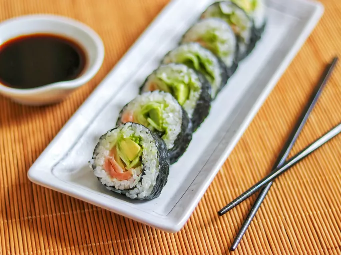

Sushi

Description
Salmon sushi rolls are surprisingly easy to make at home!
You just need a good salmon sushi recipe — and that's where we come in.
Ingredients
- Rice
- Rice wine vinegar
- Seaweed
- Wasabi paste
- Smoked salmon
- Cucumber
- Avocado
Steps
- Soak and cook the rice, then mix in the vinegar and cool in an even layer on a plate.
- Assemble the sushi rolls based on the detailed recipe below.
- Roll the sushi tightly and cut into eight pieces.